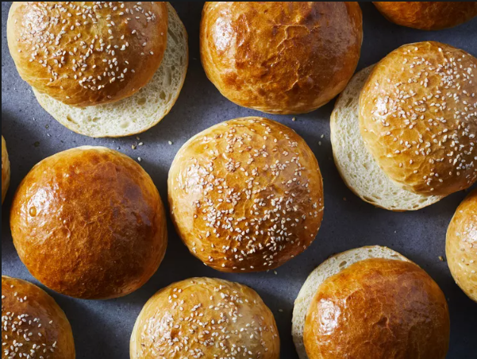

Buttery Brioche Hamburger Buns

Description
Making homemade buns is easier than you think, and it's a surefire way to impress your family on burger night, or your guests at your next backyard get-together. Let your mixer do the work of bringing the dough together, then shape the soft, pliable dough into buns. Keep the buns whole until you're ready to serve, then toast (or don't!) and get ready for the compliments (and condiments!) to roll in. These buns are best when cut in half just before serving. Leftovers would make great croutons or bread pudding.
Ingredients
- 1/4 cup plus 1 teaspoon warm water (100°F to 110°F), divided
- 1 1/2 teaspoons active dry yeast (from 1 [1/4-ounce] envelope)
- 1/4 cup plus 1 teaspoon granulated sugar, divided
- 3/4 cup whole milk, warmed
- 3 large eggs, beaten, divided
- 4 cups bread flour (about 17 ounces)
- 1 tablespoon kosher salt
- 3/4 cup unsalted butter (6 ounces), softened and cut into 1/2-inch pieces
- Cooking spray
- Sesame seeds (optional)
Directions
- Stir together 1/4 cup water, yeast, and 1 teaspoon sugar in a small bowl. Let stand until foamy, about 5 minutes.
- Combine warm milk and 2 beaten eggs in the bowl of a stand mixer fitted with the dough hook attachment. Stir in yeast mixture. With mixer running on medium-low speed, gradually beat in flour and salt. Increase speed to medium, and beat until dough is very sticky, about 2 minutes. Gradually beat in remaining 1/4 cup sugar, 1 teaspoon at a time, until well incorporated, about 4 minutes. Stop mixer, and add butter. Beat on medium speed until dough is smooth, elastic, and pulls away from sides of bowl, about 8 minutes, stopping to scrape down sides of bowl if needed. Transfer dough to a bowl lightly greased with cooking spray. Cover with plastic wrap, and let rest at room temperature until doubled in volume, 1 hour to 1 hour and 30 minutes.
- Preheat oven to 375°F. Turn dough out onto a clean work surface. Divide dough into 8 (4 1/2-ounce) portions. Shape dough portions into balls, and flatten into 3 1/2-inch-wide disks. Place disks 2 inches apart on 2 parchment paper–lined baking sheets. Cover buns loosely with plastic wrap, and let rise at room temperature until almost doubled in volume, about 1 hour.
- Whisk together remaining egg and remaining 1 teaspoon water. Brush buns on 1 baking sheet with half of egg wash. Sprinkle with sesame seeds, if desired. Bake in preheated oven until golden brown and internal temperature registers 190°F, 14 to 18 minutes. Transfer buns to a wire rack, and let cool completely, about 1 hour. Repeat with remaining baking sheet of buns and remaining egg wash. Store buns at room temperature in a ziplock plastic bag for up to 3 days.